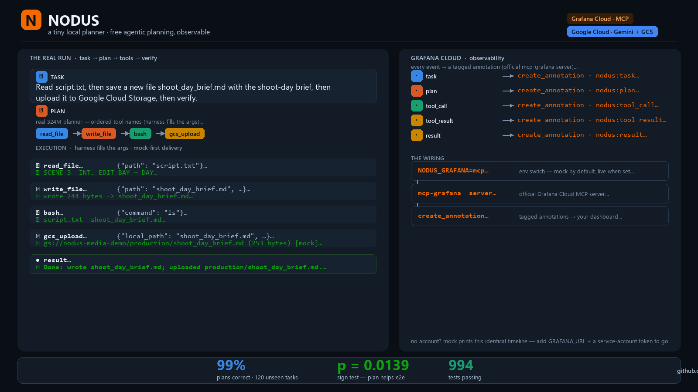

One task, one job. Nodus turns a natural-language request into an ordered list of tool names — nothing more. The harness fills the arguments, executes, and verifies; every step streams to Grafana Cloud as a live annotation. Planning is free, private, and stays on your machine.
✓ No container · no cloud key · deterministic mock by default
Before a frontier model can do anything, it burns tokens just to decide what to do — and for simple tasks, planning can cost more than the work itself. Nodus replaces that phase with a 324M-parameter transformer fine-tuned on a single job: task → ordered list of tool names. No arguments, no replanning.
The model can’t write great code — but “which tools, in what order?” is a much simpler question than “write the code.” The big model keeps the only job it’s actually good at: executing.
| Planner | Raw | + guardrails |
|---|---|---|
| previous (v2b) | 79% | 91% |
| Nodus v5 | 99% | 99%shipped |
The 324M planner reads the task and emits a fixed 8-tool vocabulary — just names, in order.
→ ["read_file", "write_file", "bash", "gcs_upload"]The harness fills the arguments, runs each tool, and verifies the result against guardrails.
→ Gemini via Vertex AI (Agent Builder)The media workflow uploads the finished artifact to Google Cloud Storage.
→ gs://nodus-media-demo/production/…Every event becomes a tagged Grafana annotation — the dashboard is the agent’s scope.
→ mcp-grafana · create_annotation▶ task: Read script.txt, then save a new file shoot_day_brief.md with the shoot-day brief, then upload it to Google Cloud Storage, then verify. ∘ plan [nodus]: ['read_file', 'write_file', 'bash', 'gcs_upload'] ↳ tool read_file {"path": "script.txt"} ✓ SCENE 3 INT. EDIT BAY — DAY The editor pulls up the dailies… ↳ tool write_file {"path": "shoot_day_brief.md", …} ✓ wrote 244 bytes -> shoot_day_brief.md ↳ tool gcs_upload {"local_path": "shoot_day_brief.md", "bucket": "nodus-media-demo"} ✓ gs://nodus-media-demo/production/shoot_day_brief.md (253 bytes) [mock] ● result: Done: wrote shoot_day_brief.md; uploaded production/shoot_day_brief.md.
The ReAct loop runs on vertex:gemini-2.5-flash — the
official google-genai SDK built with vertexai=True,
the Agent Builder / Gemini Enterprise runtime. Native function calling;
ADC auth instead of an API key. The same SDK also supports the
Gemini API (gemini: prefix) for other regions.
The media workflow finishes by uploading the artifact to
gcs://nodus-media-demo/…. Mock-first: a deterministic
gs:// URI with zero credentials, or a real upload via the
official google-cloud-storage SDK when ADC is present.
[mock] marker on every URI# runs the whole loop on Gemini via Vertex AI (ADC auth) export GOOGLE_CLOUD_PROJECT=<your-gcp-project-id> export GOOGLE_APPLICATION_CREDENTIALS=service-account.json # or: gcloud auth application-default login python nodus_agent.py "Read script.txt, then write the shoot-day brief, then upload it" \ --plan --plan-source nodus --model vertex:gemini-2.5-flash
Nodus activates Grafana Cloud through the official
mcp-grafana server. Every normalized event — task, plan,
each tool call, each result — becomes a tagged
create_annotation call, landing in a dashboard as live
annotations.
Mock mode collects the same events in memory + JSONL with zero setup — perfect for CI and the video. Live mode needs only a free Grafana account and a service-account token. MCP failure is never fatal to a run.
| Event | Annotation |
|---|---|
| task | ▶ deploy the app then verify health |
| plan | ∘ [nodus]: bash · bash |
| tool_call | ↳ bash {"command": "echo step1"} |
| tool_result | ✓ ok |
| result | ● Done. |

pip install -r requirements-ci.txt
# with the checkpoint in checkpoints/, the 324M model answers: $ echo "read src/main.py, then search for request_id, then edit it" \ | python nodus_plan_local.py --plan-once {"ok": true, "names": ["read_file", "grep", "edit_file"]}
# uses the real 324M planner when the checkpoint is present, # otherwise a deterministic gold plan — either way, fully offline $ python demo_agentic_cinema.py --task-key media
# same pipeline as judges, fully offline — JSONL instead of Grafana MCP $ NODUS_GRAFANA=jsonl:run.jsonl python demo_agentic_cinema.py --task-key media
# see AGENTIC_CINEMA.md — Google Cloud AI + Grafana MCP only $ python demo_agentic_cinema.py --live --model vertex:gemini-2.5-flash --task-key media